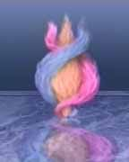

Activation du champ vibratoire du cœur — Triple Flamme
Développez Volonté - Sagesse - Amour Venez découvrir et expérimenter l' activation du champ vibratoire du Cœur 5000 fois + puissant que le champ cérébral. Ouvrez le Cœur Sacré ou Cœur Christique

HUMAIN EN RÉVEIL SPIRITUEL - CŒUR DE SAGESSE & TRIPLE FLAMME
En ces Temps Apocalyptiques les énergies et le contexte mondial sont en train de provoquer une révolution dans le système de fonctionnement mental et émotionnel de l'humain car l’inconscient se libère et révèle blessures et refoulements. Il est temps de transformer le sentimentalisme humain en Amour Compassionnel.....
Développez Volonté - Sagesse - Amour
Venez découvrir et expérimenter l' activation du champ vibratoire du Cœur 5000 fois + puissant que le champ cérébral.
A partir de méditations spécifiques, à CASTELGIROU dans un lieu catalyseur des énergies 4D, vous aurez l’opportunité de déployer votre conscience jusqu' à reconnecter votre Âme, sa Foi, sa Sagesse et son Amour illimité pour vous.
Reconnectez vous à la dimension Christique de votre Être
Notre galaxie étant placée sous la souveraineté des énergies Christiques, chaque Âme qui évolue dans cet espace temps porte ce sceau. Mais la chute de la conscience après l'époque glorieuse des civilisations Atlantes et Lémuriennes, a provoqué la déconnexion des 10 brins d'ADN et désactivé ce sceau indispensable aujourd'hui pour entrer dans le processus ascensionnel vers la 5ème Dimension.
Retrouver la pleine conscience en totale harmonie avec les règnes et la planète, déployer des facultés télépathiques et psychiques et autres aptitudes considérées comme naturelles sont désormais à la portée des Âmes connectées avec leur identité divine.
La Triple Flamme et les 3 Rayons

La Triple Flamme active 3 types d'énergies :
- le rayon de la Volonté Divine = Rayon bleu - le rayon de l'Amour Inconditionnel = Rayon rose - le rayon de la Sagesse = Rayon jaune
L'énergie de chaque Flamme vous reconnectera progressivement avec ce sceau pour l'instant atrophié au niveau du thymus et de déployer votre puissance et votre souveraineté dans votre vie.
MODALITÉS PRATIQUES
Cadre de référence des Stages : Les Valeurs de respect et de sincérité sont posées en début de stage. La période actuelle favorise la multiplication des informations et propositions ; il est impératif de rester vigilant. Discernement et liberté doivent permettre à chacun de rester Maître de sa propre vie sous la guidance de son cœur.
- Date : 29 et 30 Avril 2023 > Consulter les dates
- Lieu : DORDOGNE - 24580 PLAZAC - CASTELGIROU - Possibilité d'hébergement sur site.
- Durée : Samedi 9h - 18 h et Dimanche 9h - 16h30/17h
- Tarif : 300 euros le we - Si difficultés financières, ne pas hésiter à me contacter